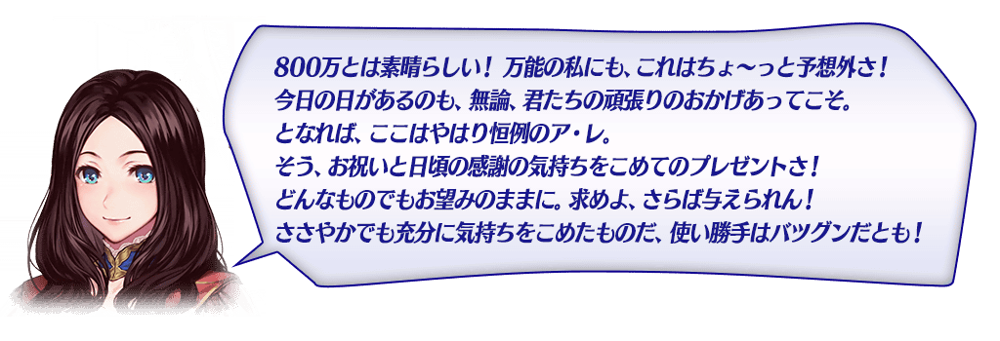
◆舉辦期間◆
2017年2月1日(三) 16:00～2月8日(三) 12:59
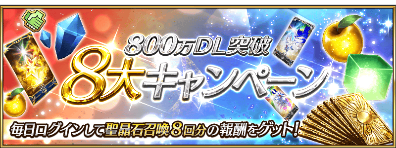
|
在下列期間中，8日內連續登入就贈送禮物呼符8張等豪華報酬！ ◆舉辦期間◆ ※特別登入獎勵會在舉辦期間中的AM3:00更新。 |
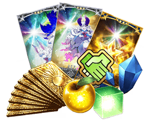 |
| 連續登錄天數 | 禮物內容 |
|---|---|
| 第1天 | 800萬QP |
| 第2天 | 友情點數 80,000pt |
| 第3天 | 叡智の猛火 ALL★4(SR) 8枚 |
| 第4天 | 英靈結晶・太陽のフォウくんALL★3(ATK) 8枚 |
| 第5天 | 英靈結晶・星のフォウくんALL★3(HP) 8枚 |
| 第6天 | 黄金の果実 8個 |
| 第7天 | 魔力稜鏡 80個 |
| 第8天 | 呼符 8枚 |
一部份Servant的戰鬥動作及寶具演出翻新！
◆對象Servant◆
・庫・夫林(Lancer)
・美狄亞
・美杜莎(Rider)
◆翻新時間◆
2017年2月1日(三) 16:00～
能在每週更新的常駐任務「Master任務」獲得的聖晶片，變成現在的2倍數量。
因此，每通過一個任務有2個，通過全部任務的話可獲得每週最多14個(聖晶石2個份)的聖晶片。
◆變更時間◆
2017年2月5日(日) 23:00～
※自在2017年2月5日(日) 23:00更新的Master任務變更報酬的個數。
另外，現在舉辦中(2017年1月29日(四)更新)的Master任務的報酬2月5日(日)以後領取的話，仍為個數變更前的個數。
曜日關卡「宝物庫の扉を開け」的舉辦日翻新！
日前為止的星期二、星期四、星期六、星期日之外再加上在星期一、星期三、星期五也追加新關卡，每天都能挑戰「宝物庫の扉を開け」。
◆翻新時間◆
2017年2月1日(三) 16:00～
※曜日關卡的詳細如下。
【曜日別關卡一覧】
| 曜日 | 關卡名 | 做為戰利品可獲得的主要道具 | 攻略推薦職階 |
|---|---|---|---|
| 一 | 種火集め <槍・殺編> |
Lancer、Assassin、Berserker的經驗值卡 | |
| 弓の修練場 | Archer的靈基再臨用道具、Archer的技能強化素材道具 | 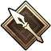 | |
| 新追加 寶物庫の扉開け AP1/2
|
QP | ||
| 二 | 種火集め <剣・騎編> |
Saber、Rider、Berserker的經驗值卡 | 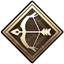 |
| 槍の修練場 | Lancer的靈基再臨用道具、Lancer的技能強化素材道具 | ||
| 寶物庫の扉開け
AP1/2
|
QP | ||
| 三 | 種火集め <弓・術編> |
Archer、Caster、Berserker的經驗值卡 | |
| 狂の修練場 | Berserker的靈基再臨用道具、Berserker的技能強化素材道具 | ALL | |
| 新追加 寶物庫の扉開け AP1/2
|
QP | ||
| 四 | 種火集め <槍・殺編> |
Lancer、Assassin、Berserker的經驗值卡 | |
| 騎の修練場 | Rider的靈基再臨用道具、Rider的技能強化素材道具 | ||
| 寶物庫の扉開け
AP1/2
|
QP | ||
| 五 | 種火集め <剣・騎編> |
Saber、Rider、Berserker的經驗值卡 | |
| 術の修練場 | Caster的靈基再臨用道具、Caster的技能強化素材道具 | ||
| 新追加 寶物庫の扉開け AP1/2
|
QP | ||
| 六 | 種火集め <弓・術編> |
Archer、Caster、Berserker的經驗值卡 | |
| 殺の修練場 | Assassin的靈基再臨用道具、Assassin的技能強化素材道具 | ||
| 寶物庫の扉開け
AP1/2
|
QP | ||
| 日 | 種火集め <ランダム編> |
Saber、Archer、Lancer、Rider、Caster、Assassin、Berserker的經驗值卡(隨機) | – |
| 剣的修練場 | Saber的靈基再臨用道具、Saber的技能強化素材道具 | ||
| 寶物庫の扉開け
AP1/2
|
QP |
在迦勒底之門內以每日出現的關卡「寶物庫の扉開け」初級、中級、上級、超級全部的AP消費量以期間限定變成1/2。
「寶物庫の扉開け」可以獲得大量的QP做為戰利品。
◆舉辦期間◆
2017年2月1日(三) 16:00～2月8日(三) 12:59
◆對象關卡◆
寶物庫の扉開け 初級、中級、上級、超級
【寶物庫の扉開け 關卡的難易度等】
| 難易度 | 推薦Lv | 消費AP | 初次通過報酬 |
|---|---|---|---|
| 初級 | 5 | 10→5 | 魔力稜鏡 1個 |
| 中級 | 10 | 20→10 | 魔力稜鏡 2個 |
| 上級 | 25 | 30→15 | 魔力稜鏡 3個 |
| 超級 | 40 | 40→20 | 魔力稜鏡 4個 |
※關卡通過報酬的魔力稜鏡是只有初次通過時才能獲得。
由於通過報酬每週都會重置，每週不斷通過，持續入手報酬「魔力稜鏡」吧。
在進行Servant及概念禮裝的強化時，大成功(經驗值2倍加成)・極大成功(經驗值3倍加成)發生機率以期間限定變成2倍。
無論如何藉此機會強化中意的Servant和概念禮服吧！
◆舉辦期間◆
2017年2月1日(三) 16:00～2月8日(三) 12:59
連續登入獎勵小翻新！
每日能得到的「凶骨」變更成「虚影の塵」。
◆翻新時間◆
2017年2月2日(四) AM3:00～
※就算是翻新日，連續登入獎勵也不會重置。
會繼承舊登入獎勵的經過天數計算。
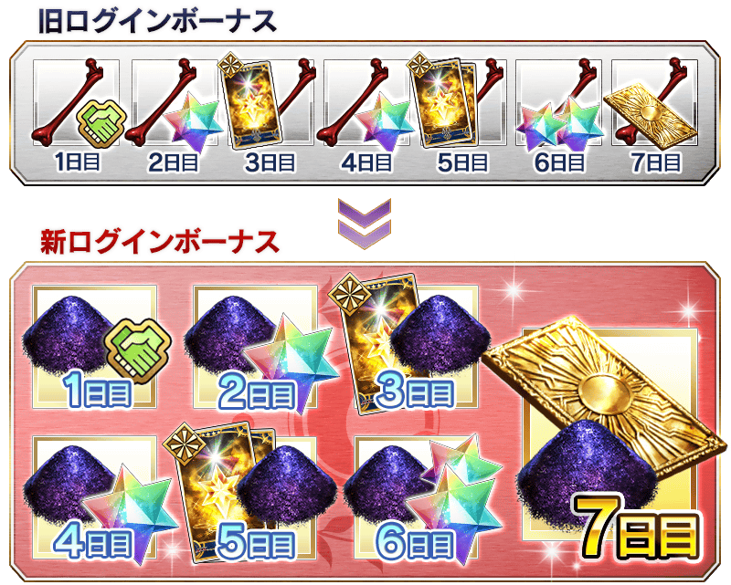
在達文西工房的「稀有稜鏡交換」，追加交換道具。
|
◆追加時間◆ ◆追加道具◆ |
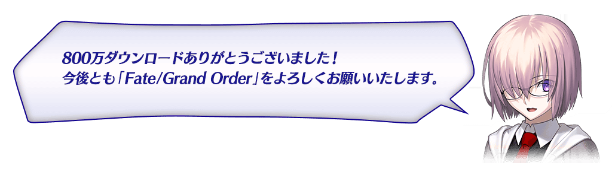
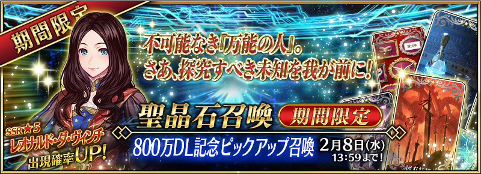
◆「800萬DL記念Pick Up召喚」期間◆
期間：2017年2月1日(三) 16:00～2月8日(三) 12:59
以期間限定舉辦「800萬DL記念Pick Up召喚」！
為了800萬DL突破記念「★5(SSR)李奧納多・達文西」以期間限定登場！
另外，在800萬DL突破宣傳活動中戰鬥動作及寶具演出翻新的「★3(R)庫・夫林(Lancer)」「★3(R)美杜莎(Rider)」「★3(R)美狄亞」Pick Up！
詳情請在聖晶石召喚畫面左下的召喚詳細確認。
※李奧納多・達文西在Pick Up期間結束後，不會追加到故事召喚。
並且，★3(R)概念禮裝的陣容一部份翻新！
「★3(R)固有結界」「★3(R)若返りの靈薬」「★3(R)謎の仮面群」先行新登場！
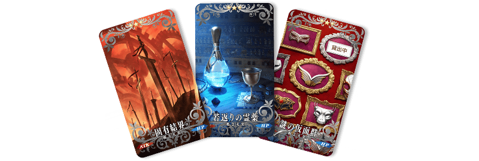
※伴隨著翻新，「★3(R)阿蘭若」「★3(R)ライオンのぬいぐるみ」「★3(R)ルーの光輪」不再是Pick Up召喚的召喚對象。另外，仍可在故事召喚獲得。
※「★3(R)固有結界」「★3(R)若返りの靈薬」「★3(R)謎の仮面群」在Pick Up召喚舉辦期間結束後的維修實施時追加到故事召喚。
※「★3(R)阿蘭若」「★3(R)ライオンのぬいぐるみ」「★3(R)ルーの光輪」在Pick Up召喚舉辦期間結束後的維修實施時不再是故事召喚的召喚對象，追加到友情點數召喚。
Pick Up期間中，期間限定Servant、Pick UpServant的出現機率提升！
10次召喚中確定1張★4(SR)以上和確定1位★3(R)以上的Servant！
※確定★4(SR)以上包含Servant和概念禮裝。
※所謂「出現機率提升」意指比同稀有度的Servant出現機率更高的設定。
配合「800萬DL記念Pick Up召喚」的舉辦，追加李奧納多・達文西的幕間物語！
◆追加日時◆
2017年2月1日(水) 17:00～
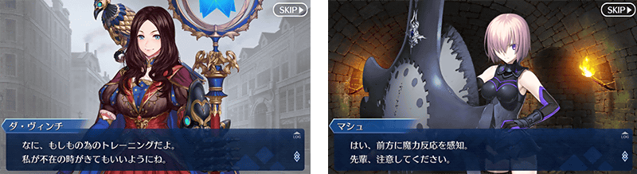


※2/1(三)更新


※2/1(三)更新

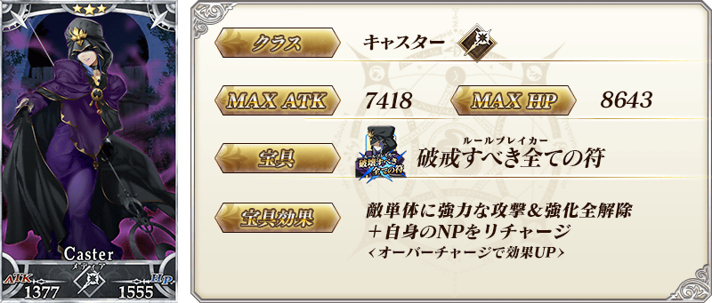
※2/1(三)更新
| 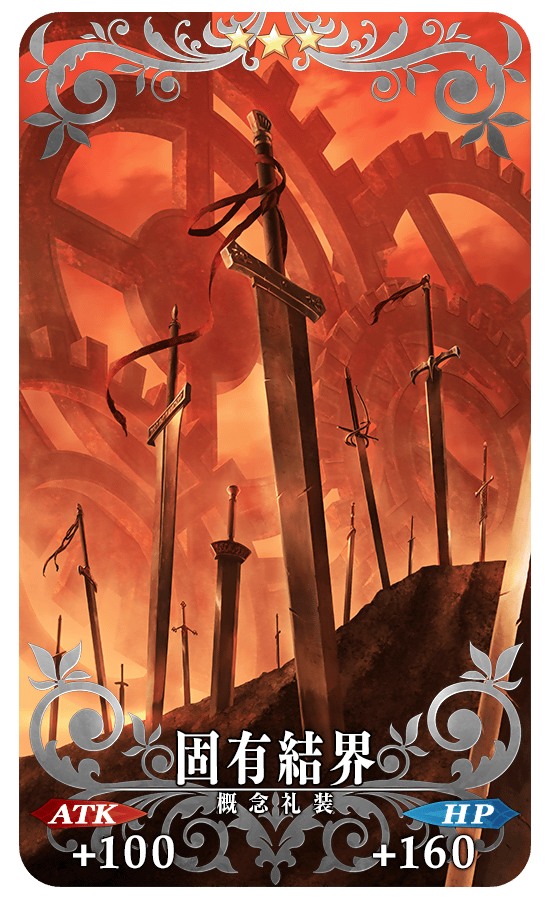 |
★★★R 固有結界 ATK 100 (最大:500) HP 160 (最大:800) 技能 〔Archer〕職階裝備的話寶具威力提升15% |
| 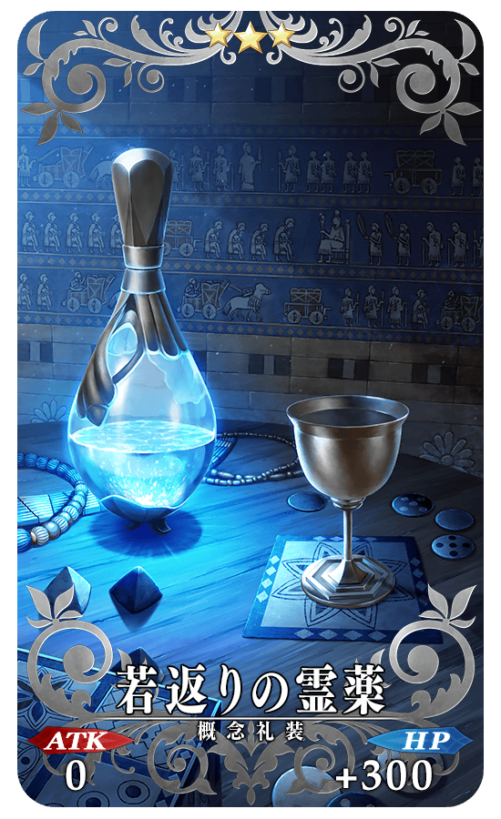 |
★★★R 若返りの靈薬 ATK 0 HP 300 (最大:1500) 技能 自身的攻擊弱體耐性提升25% |
| 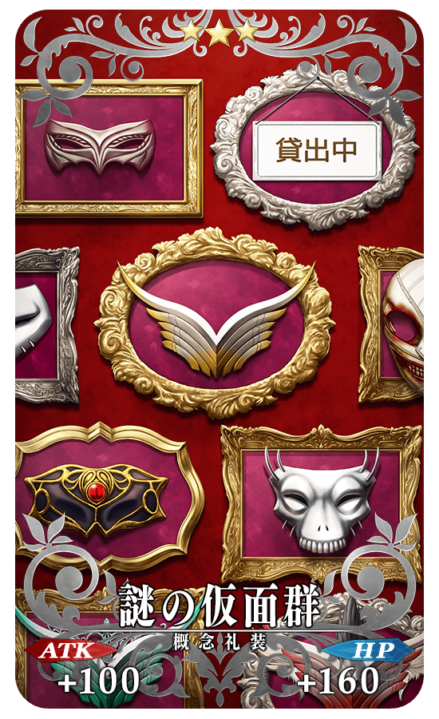 |
★★★R 謎の仮面群 ATK 100 (最大:500) HP 160 (最大:800) 技能 自身的星星集中度提升100%＆星星發生率提升5% |
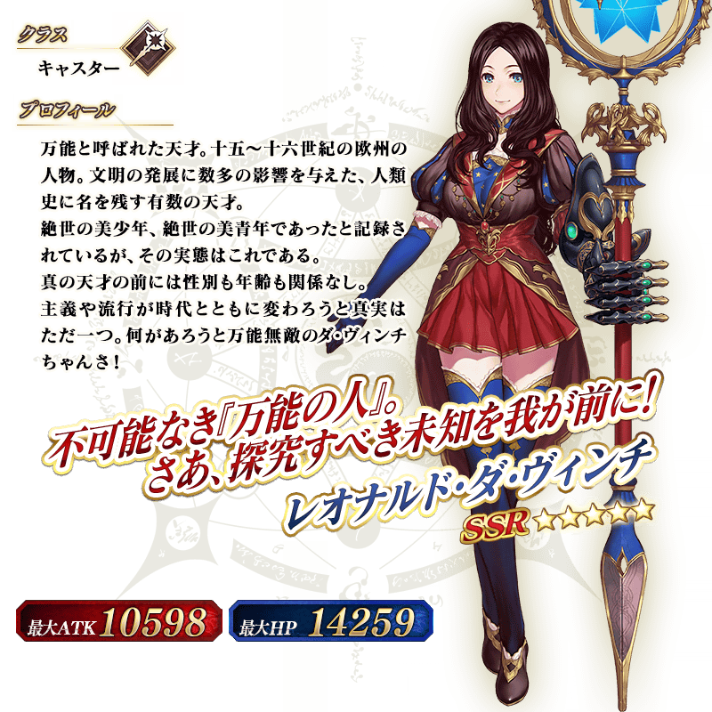